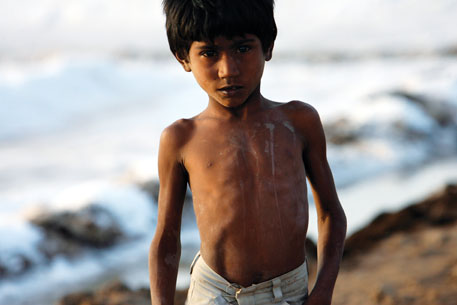
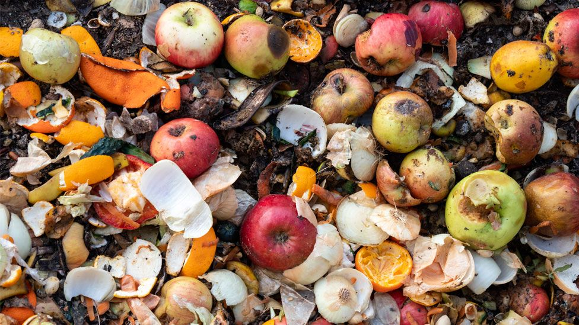
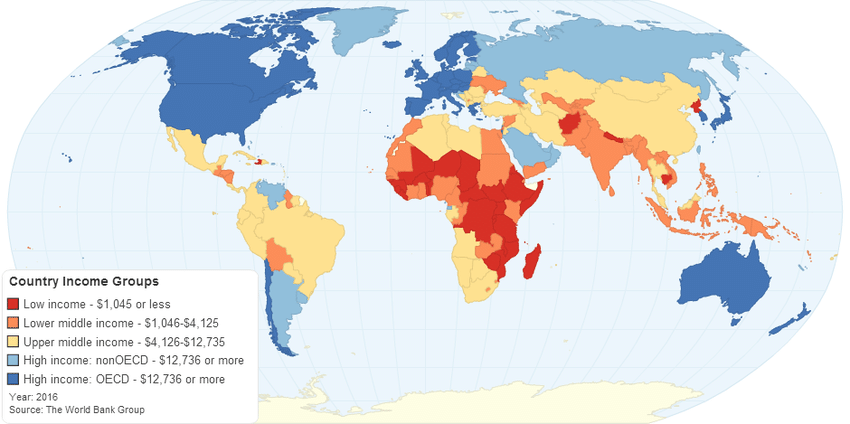

1. Wasting – Moderate and severe: % of children aged 0–59 months who are below minus two standard deviations from median weight-for-height
2. Overweight – Moderate and severe: % aged 0-59 months who are above two standard deviations from median weight-for-height.
3. Stunting – Moderate and severe: % of children aged 0–59 months who are below minus two standard deviations from median height-for-age.
4. Underweight – Moderate and severe: % of children aged 0–59 months who are below minus two standard deviations from median weight-for-age.
1 / 5

1. Children that are underweight suffer major malnutrion which causes their bones de-nsity to decrease as well as be more prone to diseases.
2 / 5

Typically food wastage happens due to overproduction and less consumtion by the consumers. This leads to waste majority of food being thrown out which could help third world contries.
3 / 5
On the other hand of the spectrum is overweight due to the consumption of large quantity of food with lack of physcial movement. This also leads to different kind of illness as well as to some extreme amputation.
4 / 5

Stunting is the impaired growth and development that children experience from poor nutrition, repeated infection, and inadequate psychosocial stimulation. Children are defined as stunted if their height-for-age is more than two standard deviations below the WHO Child Growth Standards median
5 / 5

Income Classification:The World Bank assigns the world's economies to four income groups—low, lower-middle, upper-middle, and high-income countries. This image shows the discrepancy of income between 1st world countries and 3rd world countries.